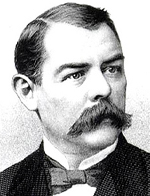

|

|

|
|
|
As a lawyer, a Reconstruction-era federal judge, a Republican activist, and a
novelist, Albion Winegar Tourgée was one of the foremost champions of
African-American civil rights in the 19th century. Tourgée was born in
Williamsfield, Ohio and was trained as a lawyer at the University of Rochester.
During the Civil War, he served as a Union officer, spending six months in a
Confederate prison. Tourgée moved to Greensboro, North Carolina following
the war, and there became active in Republican Party politics, and embarked on a
career as a novelist.
As a judge of the North Carolina state superior court in the early 1870s,
Tourgée became particularly outraged by the Ku Klux Klan attacks against
former slaves. In an 1870 letter to the New York Times, Tourgée
described in detail Klan brutality over the previous ten months: "four thousand
or five thousand houses broken open...Seven or eight hundred persons beaten or
otherwise maltreated." The Republican Party, Tourgée concluded, was simply
unwilling to act. "The government sleeps," Tourgée told the Times; "I am
ashamed of a party which...has not the nerve or decision enough" to defend former
slaves. Tourgée's novels written during this period reflected his
disillusionment and bitterness. In A Fool's Errand (1879), Tourgée
acidly recalled his own career as a North Carolina judge. In Invisible
Empire (1880), Tourgée damned the "prejudice-blinded multitudes who
made the Policy of Repression effectual".
During the 1890s, Tourgée's activism intensified as Southern segregation
hardened. In 1891, Tourgée helped establish the National Citizens Rights
Association, devoted to securing civil rights and banning racially motivated
lynchings. In 1896, he appeared before the Supreme Court on behalf of Homer J.
Plessy in the landmark case Plessy v. Ferguson. Because the Constitution
is color-blind, Tourgée argued, racial segregation is unconstitutional.
The 8-1 majority rejected Tourgée's argument, although in 1954 a unanimous
court would affirm it in Brown v. Topeka Board of Education.
In the years after the Plessy decision, Theodore Roosevelt appointed
Tourgée to several European diplomatic posts. At the last of these
postings, in France, Tourgée died in 1905.
Source: Joan Waugh, ed., Facts on File Encyclopedia of American
History: Civil War and Reconstruction, 1856 to 1869 (New York: Facts on
File, 2003), 354.
|